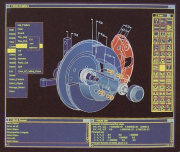
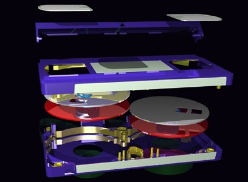

第17章：Structural Dynamics Research Corporation
结构动力学研究公司（SDRC）由杰森（杰克）·莱蒙博士、阿尔伯特·彼得、罗伯特·法雷尔、吉姆·谢尔洛克和其他数人于1967年创立。莱蒙及其伙伴此前曾在辛辛那提大学机械工程系担任教学和研究职位。该公司最初是一家机械工程咨询公司，多年来过渡为一家成熟的机械设计软件公司。公司最早为美国钢铁公司提供了咨询服务，并被该公司的业务所打动，于是决定投资该公司一段时间，并持有约40％的股权。
与美国钢铁公司的关系不止是简单的财务投资。SDRC 的工程师与美国钢铁公司的销售和营销人员密切合作，为钢铁创造了新市场。一个例子是机床行业，传统上它们使用铸件来制作机床底座。美国钢铁公司希望向这些公司销售可焊接成所需形状的钢板。SDRC 的工程师开发了分析技术，向这些潜在客户证明钢板底座是可接受的替代方案。这种关系为 SDRC 的先进工程设计和分析技术研讨会生成了大量潜在客户。此时期，美国钢铁公司还有两名人员担任该公司的董事会成员。
罗斯·亨克博士也是辛辛那提大学毕业生，在公司仅有约20名员工的1969年加入 SDRC 作为计算机操作主任。他最初的责任是发展公司的计算机辅助工程（CAE）软件业务及其教育研讨活动。随着公司发展咨询实践业务，它越来越多地涉足将基于计算机分析应用于遇到的问题。那时可用的工程软件很少，SDRC 发现自己需要开发支持其咨询工作所需的程序。亨克于1972年成为公司的总裁和首席运营官，在1982年离开前一直担任这一职位。
其中一位早期雇员是阿尔伯特·克洛斯特曼博士，他于1970年加入了SDRC。多年来，克洛斯特曼一直是公司软件开发活动的主要推动力，包括模态分析软件、实体建模、使用NURBS和变分建模进行曲面建模。虽然他的职位随着时间的推移有所改变，但大部分时间他都是SDRC的首席技术官，并作为高级副总裁管理公司的软件开发活动。另一位重要员工是杰克·马茨，他在公司的咨询活动中担任领导多年。
SDRC的主要关注点是振动分析。这项工作的目的是确定车辆或设备的固有频率，以确定何时它会以不可接受的水平振动以及确定如何减弱这些振动。技术上，这通常被称为“模态分析”。为了促进工作，SDRC与大学机构（例如辛辛那提大学）和商业公司（例如GenRad）建立了合作关系。后者是一个关键的合作伙伴，因为它提供了用于实际测量设备和车辆振动的系统。就像20世纪60年代晚期的大多数测试设备制造商一样，GenRad需要模态分析软件，从而使这种关系相互有益。
公司的早期总部位于俄亥俄州辛辛那提郊区Mariemont镇。办公室和实验室位于一些古老的历史建筑中。SDRC开始为其咨询业务开发教育方面，并且这些课程在一家前餐厅的二楼教室中举行。学生们下课后会进入餐厅的地下室酒吧，喝啤酒和聊天。
20世纪70年代初，该公司开始更多地涉足计算机工程分析的使用，既支持其咨询工作，又作为一种产生收入的手段。有限元分析（FEA）此时开始成为一种被广泛接受的工程分析工具。在此期间，FEA已经发展成为一个航空航天技术，并得到NASA的大力支持。两家最早提供此领域软件的公司是Swanson Analysis Systems (ANSYS)和McNealSchwendler Corporation（NASTRAN）（请参见第22章）。在这两家公司的产品出现之前，SDRC使用了其内部开发的FEA代码以及NASA公共领域版本的NASTRAN（称为COSMIC NASTRAN）。
柠檬非常强烈地感觉到分时系统是未来的发展趋势，SDRC应该专注于在这些系统上提供软件，而不是为一次性费用许可其软件。最初，该公司在由美国钢铁公司操作的计算机上以分时共享的方式出售ANSYS和NASTRAN。这之后，公司与控制数据的Cybernet分时共享运营以及Tymshare合作，后者是一家西海岸公司，提供基于科学数据系统940计算机和数字PDP-10的分时共享服务。大约在同一时间，SDRC将其自己的FEA软件Superb制成产品，并开始提供一个建模软件包Supertab。
早期的FEA程序分析了具有数百个到几千个个体元素的模型。输入数据通过在零件图上绘制元素网格并仔细测量每个节点的坐标来准备。这些值被输入到编码表格中，然后手动输入到80列冲孔卡中。这是一个繁琐的过程，非常容易出错。
SUPERTAB是最早自动化该过程的程序之一。它于1975年左右面向SDRC分析师和客户提供。该软件的初始版本仅允许用户数字化线条的两端，然后在线条上均匀分配中间节点。这些节点可以连接以形成单个元素。虽然主要目标是提供一种创建该公司自己的Superb程序输入的方法，但SDRC很快添加了生成ANSYS和NASTRAN输入的功能。SUPERTAB以Tektronix存储管终端作为其主要输入设备。最初它运行在公司使用的各种分时共享服务上。
1978年，SDRC搬进了位于俄亥俄州米尔福德的一个新的占地75,000平方英尺的办公设施，距离Mariemont位置约六英里。除了为其工程和软件员工提供的典型办公空间外，它还包括一个大型实验室区域，可以测试客户提供的设备。其中一个主要的咨询活动领域继续是为汽车制造商进行噪音和振动测试。柠檬和他的许多同事的教学经验反映在该公司新办公综合体中的一间大型讲堂和其他培训设施中。该公司业务的一个重要方面是为客户提供如何将FEA和其他新兴技术作为设计工具的课程。
尽管米尔福德和其它地方的培训班为SDRC带来的收入只是适度的，但它们更重要的在于这些培训课程创造了对于该公司咨询和软件服务的不断增长的需求。FEA或机械模拟这一全新的概念当时对于大部分工程师而言都是陌生的。他们在大学里或之前的工程实践中几乎没有接触过这些工具。成千上万的工程师通过SDRC的培训课程初次了解到了这项新技术。
SDRC进入软件市场
到了1970年代中期，SDRC内部存在压力要求开始以包装方式出售公司的软件，同时也可以使用分时系统。然而，Lemon特别不情愿这样做，因为他认为按使用量收费能够获得更多的收益。尽管有些公司为这种工作安排了相应的预算，但其他公司更愿意对硬件和软件进行资本投资。大约在1977年，公司开始出售SUPERTAB的授权版本，可以在客户自己拥有的计算机系统上使用，例如Digital PDP-11。
到了1978年，除了俄亥俄州米尔福德的总部外，SDRC还在底特律、芝加哥、波士顿和圣迭戈以及英国和法国设有办事处。除了机械测试和教育服务外，SDRC此时开始更加积极地销售其软件产品。这些软件有三种提供方式：客户可以授权使用软件在自己的计算机上、可以通过电话线分时访问，或者将数据带到SDRC，自行或由SDRC工程师在SDRC设备上进行分析。该公司支持的应用程序包括静态和动态的FEA、弹性塑性的应力和变形分析、传热和流体流动研究等。SDRC使用其自身的软件和从其他开发人员获得的许可软件来支持这项工作。当时主要使用的分析软件是NASTRAN和ANSYS。
最具代表性的内部开发软件包仍然是Supertab。到1978年，该公司和其客户已经开始使用2.0版本。
SUPERTAB时分共享版本的主要竞争对手来自麦克唐纳道格拉斯自动化公司（MCAUTO），其提供了一个称为Fastdraw的建模软件包。MCAUTO后来成为Unigraphics的母公司，可能是该国最大的技术时分共享服务供应商之一，拥有数十个工程设计和分析程序库。（请参见第19章）。 1977年3月，CDC推出了适用于公司Cybernet时分共享系统的UNISTRUC（结构设计统一系统）。
就可以在内部系统上运行的软件而言，有两个竞争对手。在这个时候，PDA Engineering开始提供PATRAN，这是一个建模和后处理器。 1977年秋季，泰克朗公司推出了其在公司的4081独立图形系统上运行的FEM181系统。传统的交钥匙CAD供应商没有对FEM或FEA软件提供任何重要支持，也没有提供可以自动转移设计数据到分析程序的转换器。SUPERTAB的打包版本售价为10,000美元或20,000美元，如果客户想要该程序的源代码副本则需另付费。典型的硬件配置成本为70,000美元至130,000美元。时分共享用户需要花费12,000美元至20,000美元购买图形终端，以及每小时通常为50至300美元的时分共享费用。一旦公司开始将时分共享系统用于FEM，每年超过500个小时，那么内部安装该软件的资本支出将变得越来越有吸引力。
此时公司正在快速增长。到1977年中期，就业人数已经增加到约220人，其中超过85％在米尔福德。随着销售的快速增长，公司正在变得非常有利可图，如下表所示：
SDRC营收和利润[3]（金额以百万为单位）
| 截至3月的财年 | 咨询服务 | 网络和软件 | 教育 | 总收入 | 税后利润 |
|---|---|---|---|---|---|
| 1974 | $2.4 | $0.6 | $0.2 | $3.2 | $0.1 |
| 1975年 | $2.9 | $0.8 | $0.2 | $3.8 | $0.0 |
| 1976年 | $3.7 | $1.0 | $0.2 | $4.9 | $0.3 |
| 1977年 | $4.9 | $1.3 | $0.3 | $6.5 | $0.5 |
尽管该公司的总收入较CAD系统供应商如Applicon和Computervision低，但SDRC的客户群体则像重型设备工业(汽车和重型设备行业)的大佬们：Allis Chalmers, Borg Warner, Carrier, J.I. Case, Chrysler, Clark Equipment, John Deere, Eaton, FMC, Ford, General Electric, General Motors等等。
与Tektronix建立合作关系
SDRC面临的最困难的商业问题之一是如何建立销售和分销渠道，既要内部，也要与业务合作伙伴。这对一个管理层由以学术为本的工程师组成的组织来说尤为困难。最初的销售组织成立为SDRC Systems，由Sid Barton管理。这个组织最终演变为下文所述的CAE International组织。公司渴望与其他公司建立营销关系，以帮助销售SDRC软件包。
在20世纪70年代末，Tektronix（见第22章）在计算机图形市场上与25年后的微软在PC操作系统市场上一样占据主导地位。它的4014存储管终端广泛用于工程设计和分析的分时和独立系统中。 4014与Interdata微型计算机一起打包销售，称为4081。这又被用作有限元建模系统FEM181的平台。它的市场势头缓慢，但Tektronix致力于扩大其在机械工程市场的影响力。 1978年8月，Tektronix成立了一个新组织，机械工程图形业务部（通常简称为MEG），由Claude Tucker管理。
为了启动其在机械系统市场上的活动，Tektronix采取了两步。它从制造和咨询服务公司（见第15章）获得了AD-2000的许可证，并签署了与SDRC的协议，以转售该公司的SUPERTAB软件。Tektronix将其4014终端重新打包成一个更易用的控制台MEG121。然后它在MEG121中添加了Digital PDP-11/34微型计算机，并称这个能够运行SUPERTAB的独立版本为MEG131。Tektronix希望与SDRC签订转售协议，因为它意识到基于4081的FEM181系统对许多潜在客户不具吸引力，因为其Interdata计算机几乎没有第三方工程软件可用。
总体而言，FEM181软件和SUPERTAB在大致上是相似的。SUPERTAB在几何特征方面稍有优势，而FEM181可能更易于使用。特别是，FEM181具有出色的“缩小”功能，有助于检测模型错误，也具有出色的网格生成器选项。这两个软件包的售价大致相同。
后来，泰克公司也开始销售在MEG131上运行的SUPERTAB软件，并向客户提供用于运行数字小型计算机的SUPERTAB副本。第一台安装SUPERTAB的MEG131于1978年12月被卖给沃尔普公司。大约在同一时间，Tucker被Jon Reed取代成为泰克电子MEG业务部门的负责人，他决定专注于公司产品线的AD-2000部分。
在1979年初，泰克电子与SDRC达成了一项新的协议，SDRC负责销售和支持FEM181和SUPERTAB软件，而泰克公司则销售图形硬件，有时也提供MEG131计算机系统。这种关系一直持续到1979年末，当时泰克突然决定退出机械软件业务，使得SDRC必须独立行事。
与通用电气合作
除了泰克特朗尼克斯，SDRC还与Applicon达成了一项合作开发和营销协议，双方合作将Applicon的设计软件与SDRC的有限元建模和分析软件进行集成。
1980年中期，拥有Applicon 22%股权的通用电气提出了要收购这家公司的其余股份的提议，但在Applicon上市之前被拒绝了。同年晚些时候，通用电气以1.7亿美元的价格从联合电信手中收购了Calma。在此期间，通用电气的许多部门都是SDRC公司的客户，无论是公司的咨询服务还是软件。
作为Applicon和SDRC之间的协议的一部分，Applicon在转售SUPERTAB的同时，SDRC建立了六个自动化设计服务中心，使用Applicon CAD系统。 （请参见第7章）。两家公司之间密切合作的原因之一是它们都使用数字计算机系统，使客户能够轻松安装其软件并在软件包之间交换数据。到1982年初，两家公司之间的关系恶化，包括迪克·米勒，雷克斯·史密斯和保罗·沃尔布拉赫特在内的一些SDRC人离开加入了Applicon。几个月后，拉斯·亨克也加入了Applicon 。
与此同时，SDRC于1977年成立了一个子公司CAE International作为公司的销售和支持部门。 Lemon和Farrell认为建立具有自己股票的单独企业实体将为高级经理提供财务激励来经营自己的业务。除CAE International外，还成立了公司的另外两个部门：SDRC Systems和SDRC（业务咨询部分）。分配给CAE International和SDRC Systems的人仍然是SDRC的员工，并在同一设施中工作。
SDRC加入GE有两个原因。一方面，尽管通过迷你计算机的增长，分时共享对技术计算的影响正在减弱，但莱蒙非常相信它的未来，而GE是通过通用电气信息服务公司（GEISCO）成为该行业的重要因素。莱蒙心中的第二个原因是，GE拥有数百名销售人员，可以释放出来销售SDRC软件。不幸的是，这些人中的大多数对工程软件市场知之甚少。根据迪克·米勒的说法，“弗洛伊德·索乐（底特律的一名销售员）可以超过整个GE销售团队。”
作为CAE国际的一部分，SDRC开始重新销售在乔·弗雷泽的指导下开发的NC软件。1981年7月，弗雷泽被任命为该子公司的总裁。然后在1981年11月，GE宣布与SDRC开展合资企业，计划开设五个配备Calma CAD/CAM系统、GE机器人设备和GE数控控制器的“生产力”中心。结合SDRC的分析软件，这些中心将使客户能够将项目从概念设计到原型制造。这项工作既可以由客户自己的人员完成，也可以由SDRC咨询完成。
生产力中心符合GE的“未来工厂”概念。(见第11章)。1981年12月，两家公司宣布，GE已收购CAE国际49%的股份，随后它以GE-CAE国际的名义为人所知。基本上，GE-CAE国际是一个销售业务。SDRC软件的开发和实际技术所有权仍归SDRC本身。
GE的介入并不得到许多公司员工的认可。在20世纪70年代，公司一直保持着稳定的盈利，员工们期望公司会在这个时候上市。但事实并非如此，员工们依赖的股票期权的价值突然变得不确定起来。几年后，公司才最终上市，员工才能兑现他们的期权。此外，GE的管理方式并不适合这群工程师。例如，亨克认为美国钢铁公司的关系对该公司来说更好。
1984年初，布拉德·莫利成为GE-CAE国际产品营销经理，杰拉尔德·诺贝洛奇成为北美运营经理，詹姆斯·谢尔洛克成为国际运营经理，马丁·米兹成为欧洲运营经理。1985年5月，诺贝洛奇成为该组织的总经理。
从CAE到CAD的转变
第11章描述了Calma，现在由GE拥有，将SDRC软件包作为其广泛CAD/CAM产品线的组成部分再次销售。为了简洁起见，本章不重复这些内容。 GE完全拥有Calma并持有GE-CAE International 49％的股权无疑影响了SDRC扩大产品线的努力。在很大程度上，SDRC集中于诸如实体建模以及其传统的分析软件和咨询等领域，而不是直接与Calma竞争。 SDRC的一些人对Calma有一种相当随意的态度，认为该公司只是GEOMOD的分销商。
从1980年开始，SDRC公司的集成设计和分析软件的整体产品命名法称为I-DEAS，该称号代表“Integrated Design Engineering Analysis Software”（之所以加上“-”是因为另一家公司已经使用了IDEAS名称）。该软件套件涵盖了使用线框和实体建模进行概念设计的草图，有限元建模预处理和后处理以及各种分析模块以及数控零件编程。
并非在早期推出I-DEAS时都包含了这些功能，而是随着时间的推移逐步增加。目的是使用共同的数据库和一致的用户界面。该公司还开始开发分面实体建模软件，最终演变成下面所描述的GEOMOD。
SDRC较晚才被认为是一家可行的CAD软件供应商，可能因为该公司对设计周期草稿的部分不是特别感兴趣，而其他供应商如Computervision和Applicon则在该任务上大量从事。 Daratech的1983年调查和买家指南涵盖了91家CAD / CAM软件供应商，没有提到SDRC。从1983年到1985年，我曾管理Auto-trol Technology的竞争分析。我的部分责任包括为公司的销售队伍维护一个竞争笔记本电脑。在此也没有迹象表明SDRC的存在。该公司将需要几年时间才能被认为不仅是机械工程分析软件和咨询服务供应商。
SDRC添加了实体建模
GEOMOD，该软件于1983年推出（测试版本已于前一年安装在GE上），将NURBS（非均匀有理B样条）边界表示能力添加到早期的线框模型制造软件中。曲面使用平面线框面来表示，用户可以控制这些面的大小。这提高了软件的性能，但代价是一些精度的损失。该软件同步了这两种几何表示。此外，用户可以以构建实体几何（CSG）数据表示的方式记录设计会话。
在GEOMOD中，有三种基本的创建几何的方法：
- 使用基本图形（例如块、锥体、球、管、圆柱体和六面体），进行布尔运算（如联接和减法）。
- 挤压和旋转由线、圆弧和B样条段定义的二维边界。这些边界可以沿着样条线进行扫描。
- 皮肤表面可以沿着一系列任意的二维截面进行棱柱体。然后，可以使用这个表面来定义一个实体对象。
使用这些技术创建的模型的质量特性可以通过GEOMOD软件直接计算。
不仅可以使用GEOMOD对个别零件进行建模，还可以定义部件组合。该软件的用户界面在很大程度上取决于所使用的计算机和终端配置。SDRC支持Digital VAX计算机和各种存储管和光栅刷新终端、IBM大型机和Apollo工作站。通常，命令是使用终端或工作站的键盘输入的，或使用平板和光标选择屏幕菜单项的。GEOMOD的初始版本几乎完全是使用FORTRAN编写的。
GEOMOD的一个关键方面是其与其他I-DEAS模块接口的能力。运动学分析是通过Mechanism Design模块执行的，而SUPERTAB则用于准备模型数据，以进行有限元分析，使用SDRC软件，例如SUPERB、FRAME、SYSTAN、FATIGUE和MODAL-PLUS，或包括ANSYS和NASTRAN在内的第三方软件包。到这个时间点，SUPERTAB已经被自动网格生成程序TRIQMESH补充了。
绘图制作是通过将GEOMOD数据导出到从Computer Aided Systems for Engineering（CASE）许可的GEODRAW软件包或其他第三方绘图程序上进行处理的。数据可以是线框模型，也可以是去除隐藏线的视角依赖面边界描述。在1985年时间框架内，对GEOMOD模型的更改并没有直接导致GEODRAW制图的更改，反之也然。这项技术将在以后出现。
GEODRAW可以用于定义二维轮廓，随后可以将其导入GEOMOD并用于挤出和旋转。
到1985年初，SDRC已经在100多个客户位置安装了将近300份GEOMOD副本。GE-CAE International通常按照每个安装的方式出售I-DEAS软件。截至1985年10月，基本GEOMOD的售价为35,000美元，系统装配选项为20,000美元，机构设计选项为5,000美元，而GEODRAW选项为25,000美元。工作站版本的软件价格较低，公司还提供大量折扣。除了从GECAE International购买I-DEAS软件外，客户还可以从Calma、IBM和GenRad购买完整的火鸡系统。后者当然主要专注于振动测试系统。公司软件收入的约65％来自GE-CAE International的销售团队，其余收入来自其火鸡合作伙伴。
当时，该行业领先的实体建模解决方案分析师罗伯特·约翰逊对该软件的建模能力印象深刻，特别是GEMOD扭曲物体的能力和与分析程序的接口能力。另一方面，他担心所有曲面都是通过平面面制近似的。[9]在这个时期，GEOMOD的一个主要缺点是与Calma的DDM软件和SDRC自己的GEODRAW之间的接口是通过IGES转换器完成的。
SDRC的销售团队强调咨询式销售，目的是了解潜在客户的工程流程，然后尝试将SDRC的软件产品与该流程匹配。只要潜在客户支付并参加培训课程，该公司非常愿意进行试用版软件的安装。 90％以上的试用账户最终购买了该软件。截至1985年秋季，公司的软件安装中有超过50％是在Digital VAX计算机上进行的，另外25％是在Digital PDP-11计算机上进行的，其余平分在IBM大型机和Apollo工作站之间。国防，航空航天和汽车行业在公司的软件业务中占比略低于50％。《安德森报告》1985年9月刊载了对三个SDRC用户的访谈摘要。休斯电子光学和数据系统集团有48台工作站，在Digital VAX 11/785和Apollo计算机上运行IDEAS软件。大约75％的使用情况是使用GEOMOD。根据休斯公司的高级工程师比尔·马克斯的说法，公司正在使用MODAL-PLUS将计算机模拟数据与物理测试数据进行比较。他的一个更有趣的评论是休斯正在进行设计迭代，而不依赖于纸质图纸。不过，他们在使用GEODRAW处理其他应用程序，马克斯称之为“一颗未经雕琢的钻石”。整个休斯分部非常满意SDRC软件，并计划在未来两年内添加300到400个工作站，其中大部分使用Digital MicroVAX计算机。马克斯对SDRC作为供应商的评价很高，“SDRC工程师了解我的问题，与某些公司的二手车销售员式的方法相比，几乎像是顾问。”受访的其他组织，包括NASA，Langley和霍尼韦尔商业航空电子部门，对I-DEAS和GEOMOD的评价很高。
总体而言，到1985年底，SDRC在工程设计社区中备受尊重，不仅是CAE技术的供应商，还逐渐成为更广泛的设计解决方案的供应商。
继续转型成为CAD供应商
在接下来的几年中，SDRC继续向远离被视为机械工程咨询公司转型，成为更传统的软件机构。值得注意的是，在整个转型过程中，似乎没有公司有意将自己变成一个交钥匙系统供应商。由于通用电气拥有GE-CAE International的49%股份以及凯马（Calma）的全部股份，因此Calma可以说是指定的系统公司，而SDRC被鼓励专注于市场的软件和咨询方面。
1986年4月，SDRC推出了I-DEAS软件，可用于通过最小化这些零件的质量来优化零件设计。这是几年之前Rasna开始提供类似软件。SDRC软件使用户可以处理多个负载情况，以确保设计的完整性。
SDRC主要支持Digital、IBM和Apollo计算机硬件。1986年初，将I-DEAS程序包移植到了惠普（Hewlett-Packard）的HP-9000 Model 320工作站上。两家公司之间的安排是SDRC协助售前活动，惠普实际销售硬件和软件，SDRC提供售后软件支持。软件价格从每个位置的18000美元起。
1987年5月，GEODRAW通过基于图标的用户界面、更多的尺寸能力、智能线条字体和宏语言进行了增强。价格降至6500美元，并提供数量折扣。SDRC还实施了浮动许可证，导致客户为最大同时用户数量付费，而不是软件可以运行的工作站数量。换句话说，如果客户有20个工作站，但同时只会运行10个GEODRAW，那么它只需要支付10个许可证的费用。除了Digital和Apollo工作站外，该软件还可用于Sun系统，但显然不能在惠普工作站上使用。
在那个时候，SDRC宣布了I-DEAS和Computervision的CADDS 4X软件之间增强的接口，这是相当有趣的进展。GEOMOD设计可以转移到CADDS 4X进行绘图和NC磁带准备。相反，CADDS 4X设计可以转移到I-DEAS进行结构和热分析。传输机制是IGES的增强或“加味”版本。当时，I-DEAS可以在Sun工作站上使用，因此SDRC软件可以在与Computervision的基于Sun的CADD工作站的网络中运行。
SDRC最终上市
1986年，Ron Friedsam被聘为CEO，他是Burroughs的17年老将。在他被聘用之前，公司一直在笨拙地挣扎，年销售额只有3900万美元，利润仅为150万美元。Friedsam注入了SDRC一种之前未知的“大型公司”管理和纪律风格。他到来后，公司的收入和利润急剧增长。虽然Friedsam注入公司能量，但他的人力资源管理技巧可能还需改进，这可以从公司几年后遇到的法律问题中看出。
这导致1987年8月向证券交易委员会提交了发行初步股票招股说明书，以每股14美元至17美元的价格出售三百万股股票。计划是公司出售一半这些股票以筹集运营资金，几位股东出售另一半股票。作为公开上市安排的一部分，通用电气将其在公司中的利益出售给外部投资者。
值得注意的是，CAD/CIM Alert在描述即将进行的发行时将SDRC描述为传统的CAD/CAM公司，而不是通常所描述的MCAE公司。发行由纽约的摩根士丹利公司和旧金山的Robertson, Coleman & Stephens承销。该公司于那一年晚些时候以12.50美元的价格结束了这次发行，略低于最初预期。SDRC公开发行股票一个月后，在1987年10月股票市场崩盘了。
SDRC作为公共公司的生活
SDRC软件分销战略中未曾提到的一个方面是与IBM的关系。SDRC安排让IBM销售在IBM计算机系统上实现的I-DEAS版本。称为CAEDS的计算机辅助工程设计系统，最初在IBM主机上运行，使用该公司的5080图形显示终端。与此同时，IBM正在营销洛克希德的CADAM软件（主要是草图定向的（请参见第13章））以及CATIA。
1987年底，SDRC将I-DEAS移植到IBM的运行AIX版本的RT/PC工作站上。这个后者版本包括一个新的FEA包，集成有限元求解器，用于处理线性静态、动态和潜在流问题，售价7200美元。一个新的制图模块，CAEDS标注，售价9800美元。
1987年，SDRC的总收入为6120万美元，其中60％来自软件销售和服务，另外40％来自公司传统的咨询业务。净收益为360万美元。约有40％的软件业务来自国际市场。SDRC基本上组织成两个部门，即CAE国际和工程服务。如果客户的需求主要是分析为导向，SDRC通常有很大的机会获得生意，但如果是生产设计和制图方面的需求，则SDRC的销售人员就会遇到很大的阻力。
此时，公司的软件已经可在Digital、Apollo、IBM、HP和Sun Microsystems的工作站、小型计算机和大型主机上进行许可授权。相比其他CAD/CAM供应商，SDRC可能支持更多种不同的平台，并在1900个客户现场拥有超过5500个软件许可证。IBM是公司最大的软件产品经销商，占SDRC总软件销售额的15％，尽管IBM也在销售CADAM和CATIA。
1988年4月，SDRC宣布推出I-DEAS Release 4.0。SDRC继续投入大量资源开发GEOMOD，该产品正在迅速成为公司的旗舰产品。公司称GEOMOD为I-DEAS实体建模，而GEODRAW是I-DEAS制图。如前所述，GEOMOD将高速的曲面建模器与精度的边界表示（B-Rep）建模能力相结合。
Release 4.0极大地增强了用户选择和修改模型中各个几何元素的能力。在进行所有所需更改后，模型可以在单个操作中转换为B-Rep数据文件。这种方法的一个负面影响是，与竞争对手相比，I-DEAS模型往往较大，并需要更长的打开时间。SDRC认识到性能是一个问题，因此Release 4.0加速了Digital和Apollo硬件的许多操作40％，由于公司程序员进行了一些特殊的性能增强工作，在IBM系统上增速达100％。此版本还实现了基于对实体模型进行的更改更新图纸的功能，但对图纸的更改不会自动更改实体模型。
Supertab现在被称为I-DEAS工程分析。版本4.0增加了自适应网格功能。这个版本的I-DEAS会在任意网格密度下创建有限元模型，再进行分析。根据结果，软件会自动重新对高应力区域进行网格细化，重复分析步骤，直到设计师满意。
1988年5月，《Anderson Report》对该公司未来持乐观态度。”两个趋势增强了SDRC持续增长的机会。第一个是技术计算的价格性能大幅提高。 MCAE应用需要大量MIPS和MFLOPS，价格不断下降。第二个是公司目前正在使用MCAE改善其竞争优势的成功案例的演变。这些“早期采用者”树立了如何成功使用MCAE技术的榜样，从而建立了广泛的公司利用这些工具的信心水平。我们对SDRC的未来继续持非常乐观态度。”[15]
尽管对SDRC持有乐观态度，但《Anderson Report》几乎两年没有再次提到该公司。
SDRC的业务和产品提供成熟
1990年，Parametric Technology的parametric design capabilities使其开始对机械CAD市场产生重大影响。SDRC早在1990年就推出了I-DEAS Release V，其中首次实现了一种名为变分几何的替代设计技术。虽然参数设计使用串行方程求解器进行预定义几何的计算，但变分系统使用同时方程求解器，并接受较少结构化的输入。变分几何技术的支持者认为它比参数设计更灵活，并使用户更容易进行更改。接下来的十年，这两种技术之间的争论将持续下去。
最初，I-DEAS实现的变分设计主要局限于二维几何。数年后才将成为全面的三维设计能力。 I-DEAS的1990版还包括基于特征的建模，允许用户将自定义特征添加到标准的孔，肋和前置加工的库中。现在可以在实体模型上显示尺寸。SDRC开始在全国范围内受到关注，在《福布斯》杂志1990年6月25日的两页文章中得到了关注。不幸的是，福布斯的文章给人的印象是SDRC是机械CAD行业中唯一的重要公司。
安德森报告在1990年8月的一期中跟进了SDRC的情况。
布拉德·莫利现在是公司软件部门的高级副总裁。SDRC的收入从1988年的7500万美元增长至1989年的9400万美元，并预计在1990年将达到1.16亿至1.2亿美元。用户数量已经飙升至23,600个许可证，分布在4,300个客户站点。该公司的总裁在《福布斯》文章中说，“越来越多的人购买我们的I-DEAS软件，从最初的设计到制造，提供全面的服务，而不仅仅是安装我们的实体建模或分析产品作为传统CAD系统的前端。”[18]虽然公司没有明确的意图退出咨询业务，但软件现在占据SDRC总收入的75%。
随着I-DEAS软件不断演进，设计和分析之间的集成得到了加强。该公司还大力改善了软件的用户界面，采用了X.11图形规范等标准。它还扩展了可以处理的分析类型，包括塑料模具填充和冷却模拟。
再次更改了命名法。现在的主模块称为IDEAS Part Design（实体建模）、I-DEAS Assembly Design（包括干涉检测）、I-DEAS Mechanism Design（复杂动态模拟）、I-DEAS Drawing Layout（组织图纸视图并准备初步图纸）、I-DEAS Drafting（之前是GEODRAW）、I-DEAS Finite Element Modeling（网格生成和与第三方分析软件的接口）、I-DEAS Model Solution（SDRC的自有分析软件）和I-DEAS Optimization（基于知识的设计改进工具）。NC软件是英国CADCenter开发的图形数控软件包，并适配到I-DEAS上。 SDRC的实施称为I-DEAS GNC。
早期的80年代，SDRC收购了在通用汽车内部研发的数据库技术，并开始开发其数据管理和控制系统（DMCS）。这项工作由通用电气资助。该软件的结构使得可以为不同的应用程序进行定制。DMCS经过通用电气和美国空军多个部门的测试多年。到1991年初，已经有40多个该软件的安装，并且SDRC开始积极扩展其软件产品组合，以涵盖广泛的数据管理功能。DMCS处理诸如管理元数据（关于数据的数据）以及继承和所有权问题等功能。尽管开发工作是为了与I-DEAS配合使用，但SDRC坚定地认为DMCS不会对使用的设计系统产生影响。它是建立在Oracle关系数据库管理系统之上的，尽管公司正在考虑在未来两年内用面向对象的数据库系统取代Oracle以增强其功能。至少就我所知，这从未发生过。DMCS最终会演变成如下所述的Metaphase。
除DMCS外，SDRC还提供了I-DEAS数据管理器（IDM），该数据管理器为少量的I-DEAS用户提供了数据管理功能。IDM主要用于I-DEAS用户，并与I-DEAS一样使用MOTIF用户界面。它特别帮助设计师管理产品数据，以便在设计和制造流程的各个阶段移动。在IDM发布之前，SDRC的用户只能使用计算机操作系统提供的基本文件管理功能来维护模型和绘图文件。DMCS的价格相当昂贵。其基本价格为首次五个用户为45,000美元。额外用户费用为1,500至4,500美元，具体取决于实施的功能和用户数量。IDM每个用户的价格为1,500美元。
SDRC在1991年初改变了其指定新版I-DEAS软件的方式。它的最新版本现在称为I-DEAS Level VI。它增加了变异设计能力，包括关系定义中的方程式。 Level VI还包括新的钣金和公差分析模块。最重要的增强功能可能是向I-DEAS制图软件增加了一个名为“动态导航器”的图形工具。当用户将光标指向图形元素时，该软件会突出显示端点、中点、交点和与现有几何的接触点。这非常类似于Ashlar在其Vellum产品中实现的技术，并最终导致Ashlar对SDRC提起诉讼。I-DEAS的用户界面也得到了增强，包括只显示常用命令的菜单，就像Windows今天所做的那样。
正如本章的其他部分所提到的，SDRC的产品套件在制图软件方面并不特别强大。I-DEAS Drafting是一个第三方产品，可以接受IGES格式的I-DEAS设计软件中的数据。这意味着其他产品同样可以用于制图，包括AutoCAD。SDRC和Autodesk建立了一种联合营销关系，推广使用AutoCAD来记录I-DEAS设计的概念。两家公司共同开发了一个名为I-DEAS SOLID Link的界面包。
在这个时间点上，SDRC聘请了鲍勃·费舍尔担任高级副总裁。他曾经领导过Prime Computer的Computervision部门，直到1990年11月。在下面描述的后来的重述之前，SDRC在1991年宣布的营收超过1.46亿美元。咨询服务现在只代表了总额的20％，但是是一个重要的20％。
1991年秋季，投资界大力推动该公司的股票。随着其股票售价在21到23美元之间，普仑德证券公司、摩根士丹利公司和罗伯逊·史蒂芬斯公司都有买入建议。显然基于公司的指导，他们都看到SDRC在1992年将产生超过1.8亿美元的营收。但事实并非如此-该公司最初报告的营收为1.63亿美元，后来被重述为1.49亿美元。到1992年底，该公司的股票售价仅略高于10美元。
进入高速发展阶段
当我在1992年3月推出《工程自动化报告》时，创刊号的特辑文章就是关于SDRC的。我总结了公司的立场如下：
“SDRC有着一个强大的产品线，以其自有的实体建模技术为基础。他们关注用户的需求，着眼于设计和分析，而这与大多数传统的CAD/CAM供应商所从事的设计、制图和制造的角度有所不同。随着这些供应商越来越多地转向支持分析需求，SDRC将其产品线扩展到了制图和制造领域。”[20]
文章讨论了SDRC带来的许多优势，尤其是能够将其分析软件与I-DEAS的实体建模技术紧密地联系在一起的能力。此外，SDRC继续执行机械工程咨询任务被视为为公司的软件开发工作提供了一定程度的实用性，这是竞争对手所缺乏的。另一个积极因素是公司支持广泛的平台，包括数字、IBM、HP、Sun和SGI机器。
另一方面，用户反馈显示，I-DEAS实体建模软件创建了过于庞大的数据文件（当时内存仍相当昂贵，高端工作站通常只有64MB或更少的主存储器），而且相对于竞争对手的软件包如Pro/ENGINEER，其性能较慢，特别是在加载模型方面。事实上，NC和详细制图软件都来自第三方，与I-DEAS实体建模的互操作性有限，这也被视为一个不利因素。实际上，许多SDRC客户使用其他软件来满足其制图和制造需求。
在增加近六年的收益后，SDRC在1992年第三季度跌倒了。9月8日，该公司宣布季度收益为每股0.10至0.14美元，远低于分析师预期的0.17美元。华尔街表现残暴，一天内将其股价打压了4.67美元，至10.50美元，尽管预计收入仍将增长10至15％。这与最高12个月的30美元相比。
当最终公布结果时，收入仅增长了2％，主要是由于国际销售放缓。当年结束时，销售额增长了12％，达到1.63亿美元，而收益下降了19％，至1450万美元，但这些数字最终会被大幅下调。迅速增长的PTC显然开始对公司产生影响。这是SDRC与投资机构关系紧张时期的开始。
1992年可能最重要的产品相关公告是与Control Data Systems，Inc.建立的合资企业Metaphase Technology，Inc.的成立。Metaphase计划使用SDRC的DMCS和CDSI的EDL（工程数据库）产品作为起点开发新一代产品数据管理软件。当这个新组织成立时，大约有100个客户使用了2,000个DMCS许可证，而在500个站点使用了5,000个EDL许可证。
打算是SDRC和CDSI都将销售由Metaphase创建的PDM解决方案。此外，新公司计划寻找其他分销渠道，包括将Metaphase解决方案纳入其产品系列的公司。罗伯特·尼尔曼（Robert Nierman）被任命为Metaphase Technology的总裁，而曾经在CDSI工作的吉姆·赫普莱曼（Jim Hepplemann）则成为了这个新的合资企业的首席技术官。在未来的四年中，他们领导开发了基本使用客户/服务器架构的Metaphase产品线。随着1992年过渡到1993年，客户们开始想知道I-DEAS第VII级什么时候会出现。
一种新一代的软件
1993年3月，SDRC推出了公司软件产品线的重大改进。这款名为I-DEAS Master Series的软件实现了新的建模能力、新的用户界面、”主模型”的概念以及团队协作大型项目的方法。系统的核心是IDEAS Master Modeler，它将线框、曲面和实体建模结合在一个单一的数据库中。它还融合了基于特征维度驱动的设计技术和完全集成的变异几何约束系统。特别有吸引力的是能够定义两个表面相切的位置，并在曲面建模变化时保持这种关系的能力。EAReport将其描述为“电子建模粘土的等价物”。
新软件扩展了之前推出的二维动态导航器，使其能够处理三维数据。I-DEAS Master Series的用户界面主要以图标为导向。命令面板根据当前正在进行的工作的上下文动态重新配置。SDRC声称这将大多数任务所需的按键次数减少了70%。IDEAS Master Series 还认真引入了Team Data Manager，一个部门级的模型和绘图管理系统，有助于项目级并发工程。企业级数据管理由DMCS处理（新的Metaphase软件仍在未来）。
其他发展包括SDRC自己的NC软件，以补充该公司一直在市场推广的GNC软件包。称为I-DEAS Generative Machining，它基于I-DEAS主模型工作。当模型被修改时，工具路径应该得到更新以反映这些变化。此外，I-DEAS Drafting 现在是双向相关的模型数据库。分析软件得到增强，包括一个模拟顾问，帮助用户逐步完成有限元建模和分析过程。
总体而言，该软件集成了许多CAD/CAM/CAE技术的前沿能力。虽然存在一些不足之处，但整体上，这是SDRC迈出的重要一步，预计将增强公司与PTC的竞争能力。这也清楚地表明，SDRC计划成为广泛的软件供应商，而不仅仅是设计和分析软件的供应商。
SDRC于1993年6月末开始发货I-DEAS Master Series，但很快遇到了一些问题。潜在客户在使用新软件时遇到麻烦，需要一些时间来修复软件中的所有问题。这对SDRC在1993年的销售产生了不利影响，公司的股票再次受到打击。在回升至每股19美元左右后，销售短缺导致股票在一天内下跌28％至13.75美元，然后开始重新恢复。
随着Master Series的推出，IBM放弃了CAEDS命名法，开始将其转售的SDRC软件市场化为I-DEAS Master Series。
在芝加哥的AUTOFACT ‘93上，IBM展示了在基于PowerPC的POWERstation 250上运行该软件的能力。
SDRC也开始推销PDM软件。到1993年底，它与总部位于欧洲的施耐德集团签署了一份价值230万美元的DMCS软件和相关服务订单。有趣的是，施耐德集团使用了非SDRC软件，特别是PTC的Pro/ENGINEER进行设计工作。这是异构设计和工程信息管理软件的第一次安装之一，这种趋势在SDRC的未来将变得越来越重要。总体而言，SDRC在1993年的收入为1.86亿美元。与1991年和1992年一样，这些数字很快就会被重新说明。
窜改账目
在1994年开始展开之际，SDRC的收入开始逐渐改善，因为该公司在远东关闭了几个大订单。与此同时，该公司与波音签署了一份800万美元的Metaphase PDM软件初步协议。这是风平浪静之前的宁静。1994年9月，该公司宣布将重新说明其1992年至1994年上半年的收入和利润，以包括与其亚洲业务销售差异有关的3000万美元的费用。该公司声称它最早在1994年8月意识到存在问题，当现金收款不足导致未收回账户大量写入时。看来，该公司的远东业务一直在预订并非实际销售的订单。
公司立即解雇了Tony Tolani，SDRC远东业务的副总裁兼总经理。他已经与公司合作21年，自1988年以来负责该销售活动。SDRC宣布将改变未来在该地区的业务处理方式。自1994年初以来，该公司将在分销商销售产品给最终用户时才承认收入，而不是在产品运送到分销商时。SDRC不是第一个因此问题而被绊倒的高科技公司，也不会是最后一个。
公司股票再次遭受重创，单日下跌36%至4.875美元，交易了1100万股，相当于公司未流通股份的近三分之一。在24小时内，股东诉讼案件已经立案。此前，公司曾被法院撤销了一份类似的诉讼。律师威廉·弗林（William Flynn）在最新的诉讼中表示：“这不只是管理问题，这不能持续两年半而不影响所有管理层。”[22] 这次SDRC在法庭上不会像以前那么幸运，同时，由于这个问题，托拉尼也不是公司管理层里面离开的最后一个人。[23] 几个月内，辞职者包括公司CEO罗恩·弗瑞德萨姆（Ron Friedsam）和公司CFO罗纳德·霍夫曼（Ronald Hoffman）。
与此同时，公司的软件不断前进。1994年9月底，SDRC宣布推出Metaphase Series 2，这是Metaphase Technology开发的最新PDM软件。它包括工作流程管理、产品结构定义、应用封装、配置管理和组件成像等功能。
对于财务问题来说，1994年底，SDRC还因Dynamic Navigator软件中使用的技术面临Ashlar的诉讼。Ashlar声称，SDRC使用了这些技术侵犯了公司董事长兼首席技术官马丁·纽沃（Martin Newall）博士所做的专利。法院最终在1997年9月裁定SDRC胜诉，因为Ashlar在申请专利之前展示了自己的技术，使得专利无效。
重新找回节奏
1995年初，SDRC发布了I-DEAS Master Series 2，具有更强的建模能力，改进的用户界面，更广泛使用动态导航器，尽管正在与Ashlar进行诉讼，但性能得到了改进，特别是可以查看复杂的隐藏线图像和零件编辑。与此同时，公司宣布了1991年至1994年中期的财务数据的重新公布。这些更改比最初预期的要广泛得多。
| 期间 | 原报告收入（百万美元） | 调整后收入（百万美元） | 原报告净收益（百万美元） | 调整后净收益（百万美元） |
|---|---|---|---|---|
| 1991年 | $146 | $130 | $17.9 | $9.3 |
| 1992年 | $163 | $149 | $14.5 | $9.5 |
| 1993 | $186 | $148 | $14.3 | ($11.7) |
| 1994Q1和Q2 | $101 | $80 | $6.4 | ($6.6) |
总体而言，SDRC从其帐簿上抹去了8900万美元的收入，并将之前报告的盈利减少了3140万美元。
公司显然需要一些成熟的监督，董事会请公司创始人之一Al Peter回到退休后担任CEO，并使公司回到正轨。在相对较短的时间内，Peter让公司专注于提高I-DEAS Master Series的质量和功能，提高其销售势头，并重新关注其分析根源。 1995年3月，我参观了SDRC并与Peter一起度过了一些时间。Peter是一个低调的工程师型人物，对于运营一家大型软件公司似乎有些不合适。他与高度锤炼的Ron Friedsam完全相反。但这正是公司从其财务失误中恢复所需要的。
I-DEAS Master Series 2是公司最初软件的重大改进，SDRC与用户紧密合作，确保软件稳定性。 Master Series在1993年中旬推出时，单个软件模块受到了相当彻底的测试，但完全集成到复杂设计中的测试未受到足够的重视。焦点是发货，因为收入增长依赖于新产品的销售。这次由保守的工程师领导，SDRC没有重蹈覆辙。
虽然软件的几何建模功能得到了改进，但真正令人印象深刻的是软件的用户界面。图标菜单通常只有两个级别，而其他系统有五到六个级别，动态导航器得到了增强，用户可以使用模型的阴影图像定义几何，而DIMENSION等命令基于选择的几何的上下文工作(例如，如果是圆或弧，则是径向尺寸)。在1995年4月的EAReport期刊上我写道:“I-DEAS是目前机械设计和分析领域中最好的交互式用户界面。”
I-DEAS主系列包括超过90个不同的模块，可以单独购买，也可以作为28个不同的I-DEAS配置的一部分购买。价格通常从每个配置的16000美元到35000美元不等，并且有大量的数量折扣。I-DEAS在Digital、Sun、HewlettPackard、IBM和SGI的UNIX工作站上得到支持，而Metaphase在相同的平台组合上获得支持，除了Digital工作站和服务器。虽然Metaphase客户端软件也受到Windows 3.1 PC的支持，但SDRC对于将I-DEAS软件移植到Windows 95或Windows NT的计划保持沉默。
该公司还似乎在Metaphase产品开发方面取得了进展。除了由SDRC和CDSI销售Metaphase外，Metaphase还被纳入由Alpherel、FORMTEK和Intergraph销售的解决方案中。SDRC管理层认为，合资企业在软件开发方面投入了SDRC自己能够投入的三倍资源。Metaphase故事的另一个有趣方面是，SDRC不仅仅针对自己的客户，而是试图将此PDM解决方案销售给使用其他CAD系统的公司。为避免出现利益冲突，SDRC已经设立了一个单独的销售团队来销售Metaphase。
EAReport对SDRC进行了审查，并给出了相当乐观的评估。“新管理层致力于更加关注用户需求，而不是投资社区。”[25]
取得进展
通过新的管理层，SDRC开始重建其销售势头。与日产公司达成了一个1200万美元的合同，为期三年的I-DEAS Master Series软件和服务。同样重要的是，与Delta Circuit Protection和Controls的MEM有限公司签订了80万美元的合同，以替换安装在PTC的Pro/ENGINEER软件上的座位。该公司在SDRC发布的新闻稿中表示，使用SDRC的可变几何形比使用PTC的参数技术更容易进行更改。[26]汤普森多媒体公司在五年内签订了价值370万美元的I-DEAS合同，波音公司则承诺额外的价值700万美元的Metaphase 2软件和服务。
到1995年秋季，CAD行业内传言认为SDRC已经在争夺福特汽车公司的竞争中胜出，成为该公司主要的CAD/CAM技术供应商。当这个价值2亿美元的合同在12月份终于敲定时，这是一个重大的好消息，意味着未来几年将获得来自福特及其供应商的重要收入。但坏消息是，福特将对SDRC施加巨大的压力，要求其提供专门针对其需求量身定制的软件。到1998年3月，SDRC已经拥有超过160人支持福特的合同。[27]这让许多I-DEAS软件的其他用户感到自己像是“二等公民”。
1994 年中起因 SDRC 需重新公布其财务结果而提起的诉讼在 1995 年末和解，和解金额为 2760 万美元，其中公司的保险承包商支付了 500 万美元。积极的一面是，I-DEAS 和 Metaphase 软件不断增长的销售额开始影响到底线。在 1995 年的最后一个季度，该公司的营业收入为 6280 万美元，特殊费用包括诉讼和解费用前的营业利润为 830 万美元。
强化产品线
1996 年初，SDRC 通过耗资 3000 万美元收购 CAMAX 制造技术公司来加强 I-DEAS 产品线中的数控部分。CAMAX 以前收购了 Point Control 和该公司的 SmartCAM 软件产品线。CAMAX 的旗舰产品名为 Camand，被广泛用于汽车行业的冲压模具加工。两个软件包都是面几何和线框导向，其主要区别在于 Camand 面向处理复杂零件的 UNIX 用户，而 SmartCAM 是一个 PC 产品，被较小的公司用于处理不太复杂的零件。SDRC 的软件产品线中，数控方面一直是一个薄弱环节，CAMAX 软件的整合被视为一次明智之举。
1996 年 4 月，该公司发布了 I-DEAS Master Series 3，具有改进的建模能力，如处理相交倒角、查看和管理设计历史的新技术、从其他系统导入几何图形和修正几何差异的更好能力、更好的数控功能以及基于与 Engineering Animation, Inc. 先前建立的关系的新型视觉化软件。随后，仅仅六个月之后，SDRC 推出了 I-DEAS Master Series 4，增加了额外的几何建模增强功能，直接将 I-DEAS 数据导出到其最近收购的 Camand 数控软件中，以及与 Alias|Wavefront Division of SGI 销售的 Alias 风格软件共享模型数据的双向功能。后面的功能可能受到了福特汽车的推动。
1996年底，公司宣布正在寻找一位新总裁和COO，期望Al Peter仍担任主席和CEO，尽管几个月后他们修正了此说法，表示新人也将成为公司的CEO。
消极方面，SDRC和Control Data System在Metaphase的管理上开始出现一些紧张情况。由于SDRC负责Metaphase销售的三分之二，公司认为它应该在产品开发和营销方面有更大的发言权。两家公司未能建立单一的PDM销售和支持组织，暂时决定各自推进。
在一个月内，Metaphase的情况发生了相当大的变化，当时SDRC宣布以3100万美元收购CDSI在Metaphase的50%股权。
这使得SDRC完全控制了130人的Metaphase业务，包括产品开发和营销，从长远来看证明这是一次有益的举措。
SDRC进入中端产品市场
在1997年初，人们越来越意识到SolidWorks、Solid Edge和Mechanical Desktop等中端CAD软件产品的新类别对传统CAD软件产品供应商（例如SDRC）所销售的产品构成了竞争威胁。SDRC在1997年2月宣布推出了其第一个Windows NT产品——I-DEAS Artisan Series。
Artisan系列包括I-DEAS Master系列中所包含的大部分基本功能，除了一些更高级的曲面建模能力。Artisan系列的基础软件套件被称为Artisan Series Modeler，它包括实体建模、装配建模、公差和机构分析、绘图以及多个数据转换器，售价仅为4,995美元。这一行业最初的反应是，这是一款价格相当合理的软件。
SDRC的计划是攻击其他中端供应商正在开发的同一市场——当时主要以绘图为导向的现有AutoCAD用户。在整个市场中，SDRC特别关注汽车行业，该行业当时生产的收入占公司收入的三分之一以上，而两三年前仅为10％。这在很大程度上是由于公司在福特汽车公司赢得了重大合同。Artisan系列预计会对许多福特的供应商特别具有吸引力。
EAReport认为Artisan系列是目前为止中档CAD产品中最完整的初始提供，这让它最为印象深刻。Artisan系列模型制造商采用了与EAReport早期报告的I-DEAS Master系列相同的动态导航器和精简菜单结构（仅有两个层级）。该软件仅支持Windows NT操作系统，并且没有计划在UNIX工作站上提供此软件或在Windows 95上运行。为了保持兼容性，SDRC选择坚持传统的I-DEAS用户界面，而不是采用Windows范例。据Jeffrey Rowe称，“虽然一些用户可能会发现这种不符合Windows的情况有些烦人，但大多数人很快就会克服它并开始真正的工作。”[30]
任何高端解决方案供应商在推出低价产品时面临的主要问题是如何维持更昂贵产品的销售。克莱顿·克里斯滕森在他的优秀著作《创新者的困境》中深入探讨了这一问题。大多数公司试图在低价产品周围建立人造壁垒，而SDRC在这种情况下也没有例外。该公司试图通过将Artisan系列营销为个人生产力工具，而Master系列则具有内置的数据共享工具，以减少两个产品系列之间的冲突。这类似于达索系统最终采取的策略，以及后来UGS采取的策略，这些公司收购了这些中档产品。
此外，在从Master系列切换到Artisan系列时，虽然提供几何数据的双向转移，但模型的历史树没有转移。然而，当单向转移时，它会被转移。两个产品系列的许可证也有很大不同。Artisan系列的许可证是特定计算机系统的许可证-通常称为“节点锁定”。Master系列客户可以购买浮动许可证，以便他们只需要安装在任何一个时刻使用的最大拷贝数量，而不是每个潜在用户的拷贝。Artisan系列软件的价格不折扣，而SDRC为其其他软件提供量价折扣。根据当时的SDRC领域运营副总裁Bill Carrelli的说法，“在某一时刻，购买Master Series实际上更经济。通常，在设计团队中有15到20人时，这种情况才会发生。”[31]
Artisan系列旨在通过增值再卖商（VAR）进行独家销售。SDRC声称，它希望使Artisan系列的客户升级到Master系列变得容易，并在客户升级时提供了Artisan系列支出的全额交换。
1997年初，SDRC的业务状况良好，收入快速接近年收入2.5亿美元的水平。
SDRC成为一家成熟的公司
在整个90年代，CAD软件开发商苦苦挣扎，试图让设计工程师更容易编辑零件或组件模型，特别是那些工程师没有创建过的模型。使用当代的参数化设计软件往往是一种挫败感。几何元素需要以非常精确的方式相互关联，否则无法正确执行更改。设计复杂零件就像编写一个计算机程序，其中参数取代了程序变量，零件的历史记录树则取代了软件逻辑。
作为1997年中期推出I-DEAS Master Series 5的一部分，SDRC引入了一种称为VGX（扩展变分技术）的新建模技术。VGX旨在将三维实体建模带入到变分几何在二维领域中提供的领域。它最终将使用户可以在不考虑它们最初创建或随后修改的顺序的情况下更改几何实体。
根据当时与D.H. Brown Associates在一起的Marc Halpern博士的说法：“..VGX使可编辑的参数特征立体的编辑过程大为改善，因为它消除了理解和应用对象历史来进行模型更改的要求。”[32] 另一种说法是，VGX使模型编辑过程更加自然。可变几何术比纯参数几何术的一个优点是能够处理欠约束模型。约束可以后续添加，增加了设计过程的灵活性。在某种程度上，这更像是一项技术公告而不是完全的功能。SDRC使用Master Series 5推出了基本的三维可变技术，并计划在未来的版本中推出更详细的功能。第一个版本仅适用于有限的一组挤压特征。Master Series 5还有许多其他增强功能，使其成为复杂零件和装配的有吸引力的设计、分析和制造工具。性能再次提高，在线帮助、在线教程和电脑培训使软件包更易于学习和使用，Web浏览器可以用于查看I-DEAS模型，Metaphase与I-DEAS更加紧密地集成，公司重新强调分析模块，并开始将CAMAX软件与I-DEAS集成。EAReport在其对I-DEAS Master Series 5的评论中总结说：
请仅返回翻译后的内容，不包括原文本，保持与原始文本相同的格式，将每个项目列出。
我们对SDRC提高产品线速度的表现印象深刻。唯一阻止公司与Parametric Technology竞争的是缺乏一支与PTC相当数量和专注的积极销售团队。SDRC正在寻找一位新的CEO，如果那个人能激励这个组织，结果将会令人印象深刻。
SDRC在1997年6月解决了寻找新CEO的问题，当时Al Peter再次退休，Bill Weyand接任总裁兼CEO。（他在1998年2月成为董事长）。Weyand曾是Measurex的执行副总裁，该公司为纸张和工艺工业提供控制系统。尽管他不是来自CAD相关公司，但Weyand有着与计算机导向供应商为工业客户销售相关的强大技术背景。
1997年末，SDRC宣布计划收购两家名为Computer Aided Systems for Engineering（CASE）的私人公司，以SDRC股票的150万股作为交换，当时价值2500万美元。CASE已经负责开发了几个I-DEAS模块，包括绘图、查看和标记以及CADAM转换器，SDRC是该软件的唯一经销商。这种关系始于1984年的GEODRAW开发。从财务角度来看，这项收购对SDRC的收入没有影响，但它提高了公司的利润，因为SDRC不再需要向CASE支付版税。
扩展产品线
在SDRC，产品增强开始快速而猛烈地推出，每六到九个月左右发布一次重要的I-DEAS版本。1998年3月，SDRC宣布推出I-DEAS Master Series 6，其增强功能主要集中在四个方面-装配建模、分析、制造和协作设计。Master Series 6还扩展了上述VGX技术，将其包括在装配和单个零部件中，使装配设计成为零件设计的逻辑扩展。当用户将零件拼合在一起时，图形反馈显示零件是否平行，切向，垂直等。内置机构动画消除了第三方运动学软件的需求。
Master Series 6解决了两个重要的分析问题-抑制分析软件不必考虑的小细节和清理可能会扭曲结果的曲面建模元素。以前，每个细节都是根据情况进行抑制的，这是一个相当耗时的过程。新软件使用户能够在单个操作中抑制所有小细节。
当代建模技术在实体物体上创建了极其复杂的表面，从而可能导致小的几何片。有限元建模软件通常在每个表面的边缘创建节点，这可能不能准确地代表用于分析的模型。Master Series 6以更全面的方式处理这些表面，产生更小的有限元模型，并根据公司的说法产生更准确的结果。

1998年5月，EAReport发表了一篇关于SDRC的深入评估。在撰写这篇文章的过程中，我再次访问了辛辛那提，并与韦扬德和卡雷利共度了相当长的时间。韦扬德明确看到公司的主要目标是需要加速其增长。我们讨论了一些相互关联的步骤，以实现这一目标：
- 第一步是明确定义公司的市场地位。据时任市场副总裁卡雷利表示，“我们希望成为行业领先公司在时间市场方面的首选合作伙伴。”
- 需要人力来销售复杂的设计和数据管理解决方案。1997年，SDRC公司将其现场销售组织增加了50％，计划在1998年再增加50％。韦扬德预计，这支扩展的团队将在1998年中期开始对销售产生积极影响。
- 该公司致力于直销和代理商之间的50/50分成。他们已经采取了措施，以确保公司不会与其自身的VAR竞争。基本上，SDRC的人负责特定指定的账户，而VAR则负责所有其他机会。
- 在过去的三年中，SDRC的汽车业务从总收入的15％增至40％以上。该公司计划利用其在福特，马自达，日产和雷诺等公司的地位，并积极追求这些公司的一二级供应商。其他主要市场为航空航天（19％）和消费品（23％）。公司的业务在美国（49％）和国际（欧洲30％和亚洲21％）之间分布相当均匀。
- SDRC的管理层意识到公司的产品命名存在很多混乱，如Master Series，Artisan Series等。
- 最后，Weyand和Carrelli都讨论了SDRC在市场上需要更大的知名度。两人都认为公司在被考虑的项目中赢得了很大一部分，但并不总是被考虑。为了对抗缺乏认知度，公司推出了一项新的营销活动，旨在针对高层管理人员，在华尔街日报和其它几家主要商业和贸易杂志上全页刊登广告，强调新标志和I-DEAS品牌。
扩大在汽车产业的渗透
当福特选择SDRC作为其设计和PDM软件的公司标准时，CAD行业的很多人都感到惊讶。当这项采购正在进行时，SDRC显然是一个黑马候选人。然而，这笔2亿美元的交易似乎对双方都很有效。截至1998年4月初，福特公司已安装了3,000个I-DEAS座位和2,600个Metaphase Enterprise软件座位。此外，该公司已向福特的供应商发运了超过2,000份I-DEAS复件。与福特的合同包括一个要求SDRC以大幅折扣的价格向这些供应商出售I-DEAS软件的条款。到1998年春季，福特正在使用SDRC软件来支持超过十二个车型项目，这比最初预期的技术上升速度要快得多。
此时，福特公司产生了SDRC收入的约13％。 EAReport观察到这是该公司业务的重要部分，但并不大到其他客户需要担心他们的需求没有得到满足。报告继续说：“SDRC不能通过仅关注福特而繁荣发展，而是需要将其作为额外重大交易的原型。”[35]
福特此时正在进行一项重大的再工程化倡议，称为“福特2000”，其多个目标包括降低成本、提高产品质量和将开发新车的时间从42个月缩短为仅20个月。SDRC在福特设有一个项目办公室，由170名专业人员组成，旨在帮助福特实现这些目标。SDRC将福特项目作为其希望如何与其他大型全球制造商，特别是汽车行业合作的原型。
一个很好的例子是该公司与日产之间不断增长的关系。 1995年3月，日产和SDRC签署了一份协议，根据协议，日产实施了I-DEAS Master Series机械部件设计。 1998年1月，两家公司通过一项新的价值1亿美元的多年协议扩大了合作关系，将I-DEAS的使用范围延伸到所有的设计过程中，从概念和白色车身到车辆模拟和原型生产。与福特一样，日产使用Metaphase Enterprise管理产品信息。
在另一项交易中，SDRC于2月与雷诺签订了一份I-DEAS Master Series和Metaphase Enterprise的合同，这份合同预计在五年内价值超过3500万美元。 这个合同要求SDRC与Matra Datavision密切合作，后者是雷诺早期选择提供车身设计和制造软件的公司。
改善匠人的互操作性
1998年秋季，中档CAD市场的竞争日益激烈。SDRC在这个领域没有取得太大的影响，自其推出I-DEAS Artisan Series以来，仅售出2000份。其主要弱点似乎是缺乏与公司高端Master Series产品的完全双向兼容性。Master Series用户可以将模型（包括历史树信息、特征定义、约束和参数关系）下载到Artisan中，但如果对模型进行更改，则只能将在Artisan中创建的基本几何图形导出到Master Series。这对于希望这两个软件产品共存并协同工作的大型组织来说是一个无法接受的限制。

当SDRC的客户明确提出这一点时，该公司通过实现Artisan和Master Series的完全双向兼容来做出了回应。这两个软件包仍然存在一些功能上的差异。例如，Artisan Series 3中没有包含Master Series中包含的一些高级曲面建模功能，比如变分扫描。除了双向兼容性外，Artisan Series 3还提供了完整的绘图功能，类似于Master Series所提供的功能。
之前的版本足以记录Artisan的设计，但是不足以作为一个完全独立的绘图包。SDRC针对Artisan的销售策略有所改变，更加注重将Artisan销售给现有的大客户和主要供应商，以便将这些二维绘图用户转变为I-DEAS用户。
公司的新CEO Bill Weyand似乎对SDRC的财务结果产生了影响。到1998年底，公司的年收入已经超过4.5亿美元，并且利润不错。然而，随着1999年的进展，收入增长放缓，当公司宣布上一季度的收入增长只有7％，并且利润较去年同期下降了64％时，公司的股价遭到了重创。值得注意的是，SDRC的机械工程咨询业务已经缩小到不再作为一个单独的业务线进行报告。它只是与其他服务收入一起呈现。
1998年10月，SDRC以约3100万美元现金收购了位于密歇根州安娜堡的私人公司Imageware Corporation。Imageware是一家专业的软件公司，提供了广泛应用于汽车工业和其他公司的自由曲面建模软件，用户包括梅赛德斯-奔驰，大众，丰田汽车，福特汽车，波音，洛克希德-马丁，摩托罗拉和索尼等。然而，即使在该公司进行收购时，SDRC预期的持续销售额也没有实现。虽然它最初继续营销Imageware软件，但到2001年初，它不再作为单独的产品销售了，而是作为I-DEAS产品线的一部分进行销售。
扩大SDRC在PDM领域的存在感
Sherpa Systems是工程文档管理和产品数据管理领域的先驱之一。该公司在90年代深受困扰，尤其是在与休斯飞机签订了一份非常大的合同之后，转移了公司的开发人员，使他们无法为大多数潜在客户提供所需的软件。1998年12月，位于波士顿的电子出版商Inso Corporation以3500万美元收购了Sherpa。
2000年1月，SDRC宣布从Inso收购了Sherpa Systems和一家名为Inso France Development的软件开发组织。后者涉及XML技术，SDRC计划利用其专业知识，使公司的Metaphase软件更加互联网友好。该组织还具有开发轻量级用户界面和Web出版技术的专业知识。SDRC为Sherpa和Inso France Development支付了约970万美元。然而，收购背后的主要原因是为了获得Sherpa的客户群，其中许多人有1,000到10,000个用户。 Sherpa的客户群包括波音，Thiokol和约翰逊控制公司在内的90,000名用户。前两个也是SDRC Metaphase客户。由于众所周知Inso有意出售Sherpa，因此SDRC显然不想看到MatrixOne，PTC或Unigraphics Solutions等竞争对手在这些帐户中占据一席之地。
将Sherpa客户与SDRC已经安装的250,000个Metaphase席位相结合，该公司现在拥有约40％的安装PDM市场份额。尽管SDRC表示将继续维护Sherpa软件，但对所有各方来说显然是公司计划尽快将这些账户迁移到Metaphase。2001年初，SDRC正式宣布不再增强Sherpa软件的功能。
PDM市场面临的主要用户接受问题之一是公司在安装复杂软件方面遇到的困难。虽然CAD/CAM软件包基本上可以直接使用，但PDM软件通常需要大量定制。SDRC试图通过营销Metaphase Express来解决这个问题，这是一组Metaphase软件模块和预定义服务，价格设定明确。该公司开发了行业特定的模板，以便促进这一过程。除了Metaphase产品线之外，SDRC于2000年3月推出了一款名为Accelis的电子商务软件产品，使用户能够从不同的企业应用系统访问数据，并将这些数据呈现给组织中的用户。实际上，Accelis是一个Web中心的集成框架，用于链接不同的数据源。包括波音和阿尔斯通电力在内的几个Metaphase客户很快将这个新软件添加到他们的PDM安装中。虽然SDRC显然希望Accelis客户与Metaphase一起使用这个软件，但它是设计用来与其他供应商的PDM解决方案一起使用的。1999年7月，SDRC以1030万美元的股票和股票期权收购了TD Technologies。TD开发了一个名为Slate（工程师系统级自动化工具）的产品，SDRC计划利用它来扩展Metaphase Enterprise的PDM能力。尤其是销售汽车行业的Slate产品未能达到预期，导致2000年的850万美元减值。同样在1999年，该公司以1550万美元现金收购了Enterprise Software Products Inc.，该公司是FEMAP桌面FEM工具的开发者。
随着世界逐渐适应新千年，SDRC在2000年春季开始发运其最新版本I-DEAS 8。随着这一更新，Master Series和Artisan之间的区别被模糊化，因为Artisan用户现在可以访问与Master Series用户相同的应用程序。Artisan现在支持浮动许可证，两个版本都使用Team Data Management管理工作中的PDM。I-DEAS 8在几何建模、装配管理、集成Imageware曲面建模软件、更快的有限元建模和分析以及改进的NC功能等方面都有所提升。一个全新的完全集成的制图模块I-DEAS Master Drafting取代了老的I-DEAS Drafting Detail包。
在2000年5月，SDRC聘请Glenn Wienkoop担任总裁兼首席运营官，负责产品开发、营销和收购管理。在加入SDRC之前，Wienkoop曾担任Cognex Corporation的执行副总裁。然而，更为重要的是，在Cognex之前，他曾是Measurex的高级管理人员，Bill Weyand在成为SDRC首席执行官之前也在该公司工作过。
从业务角度来看，2000年第二季度的收入微增6%至1.181亿美元，其中Metaphase销售增长了25%，而收益下降了24%，为820万美元。该公司在那一季度获得了几个重要的Metaphase订单，包括日产（430万美元）、Erickson（300万美元）和雷诺。尽管Metaphase销售额正在增加（它们在2000年占公司营业额的35%），但I-DEAS销售额开始下降。
总的来说，威扬德在1997年接管后的头几年，公司表现还算不错，但2000年销售增长显著放缓。2000年，福特占公司收入的14％。下表中显示的巨额损失主要是由于收购Sherpa、Imageware和TD Technologies所产生的4700万美元的特别费用。如果不计重组费用，该公司于2000年赚取了1860万美元。除了收购CDSI持有的Metaphase部分所产生的特别费用外，1997年的收入应该为4900万美元。
| 年份 | 收入（百万美元） | 收入（百万美元） |
|---|---|---|
| 1996年 | $285 | $38 |
| 1997年 | $351 | $30 |
| 1998年 | $403 | $36 |
| 1999年 | $442 | $28 |
| 2000年 | $452 | ($28) |
EDS 收购 SDRC
SDRC的2000年度报告于2001年3月分发给股东，态度相当乐观。它详细介绍了公司的协同产品管理举措，这将使SDRC将其机械CAD/CAM产品、Metaphase PDM软件和新的互联网中心工具集成在一起，以应对整个产品生命周期管理流程。报告讨论了一款新的协同产品软件套件，计划于6月推出。
2001年5月23日，EDS宣布同意以约9.5亿美元的现金或每股25美元的价格收购SDRC。与此同时，EDS还提议收购其14%的UGS子公司公开持股部分。两家公司合并后以UGS名称命名，并成为EDS的第五条业务线。请参阅第19章，了解这两家公司如何在EDS的领导下合并以及如何将I-DEAS与Unigraphics融合的详细描述。
[1] SDRC maintained the informal atmosphere of Mariemont at its new facility in Milford. Outside the cafeteria used by the students, the company installed a bar with a beer tap that initially was available to employees and students at all times. Eventually, the company’s management realized that some of its employees were engaged in potentially dangerous testing activities and reduced the time the bar was open to after working hours. Friday afternoon “beer blasts” were not unique to Silicon Valley.
[2] Interview with Richard Miller, March 9, 2004
[3] Authors personal papers
[4] I was working for Tektronix at the time as the district sales manager in Denver, Colorado and was promoted to national MEG program coordinator when MEG was established. In this role I was involved in most of Tektronix’s relationship with SDRC for the next 18 months.
[5] Interview with Richard Miller, March 9, 2004
[6] Interview with Russ Henke, March 22, 2004
[7] Personal notes from NCGA-84 Conference
[8] The Anderson Report, September 1985, Pg. 4
[9] Johnson, Robert H., Solid Modeling: A State-Of-The-Art Report, Second Edition, October 1985
Management Roundtable
[10] The Anderson Report, September 1985, Pg. 4
[11] The Anderson Report, September 1985, Pg. 4
[12] The Anderson Report, May 1987, Pg. 7
[13] The Anderson Report, September 1987, Pg. 7
[14] CAD/CIM Alert, August 1987, pg. 3
[15] The Anderson Report, May 1988, Pg. 3
[16] The Anderson Report, February 1990, Pg. 1
[17] Wiegner, Kathleen K., Forbes Magazine, June 25, 1990, Pg. 131
[18] The Anderson Report, August 1990, Pg. 5
[19] CAD/CIM Alert, March 1991, Pg. 1
[20] , March 1992, Pg. 6
[21] , April 1993, Pg. 3
[22] The Cincinnati Enquirer, September 16, 1994
[23] , October 1994, Pg. 3
[24] Engineering Automation Report, April 1995, Pg. 6
[25] Engineering Automation Report, April 1995, Pg. 9
[26] Engineering Automation Report, May 1995, Pg. 12
[27] SDRC Press Release dated March 26, 1998
[28] SDRC 1997 Annual Report, Pg. 30
[29] Engineering Automation Report, February 1996, Pg. 14
[30] Rowe, Jeffrey, Computer Graphics World, June 1997, Pg. 97
[31] Engineering Automation Report, March 1997, Pg. 1
[32] Engineering Automation Report, June 1997, Pg. 5
[33] Engineering Automation Report, June 1997, Pg. 9
[34] Engineering Automation Report, January 1998, Pg. 15
[35] Engineering Automation Report, May 1998
[36] SDRC 2000 Annual Report, march 2001, Pg. 2
[37] SDRC 2000 Annual Report, march 2001, Pg. 2
[38] SDRC 2000 Annual Report, march 2001, Pg. 13